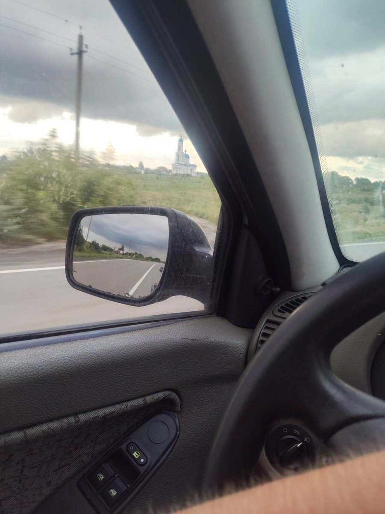
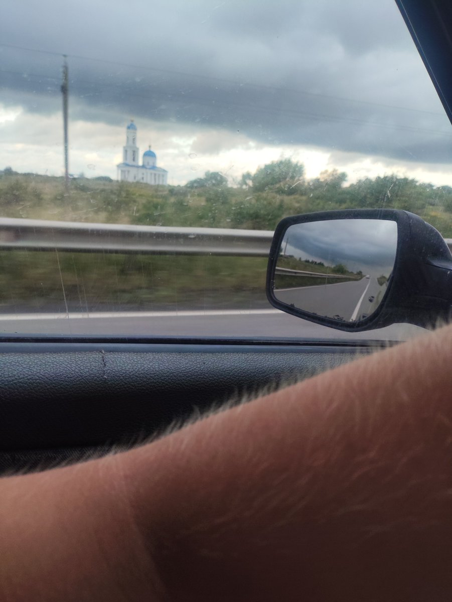

粉天藍貓☀️☁️🌙
@PinkCatLoveSky
@Kir4uha No using phone while driving.
But the road is so straight and empty I guess it's fine.
Don't do this again still.


Kiruha
@Kir4uha
yesterday I took a ride to the city and decided to take a couple of photos and one video https://t.co/mgyTSAQiBd